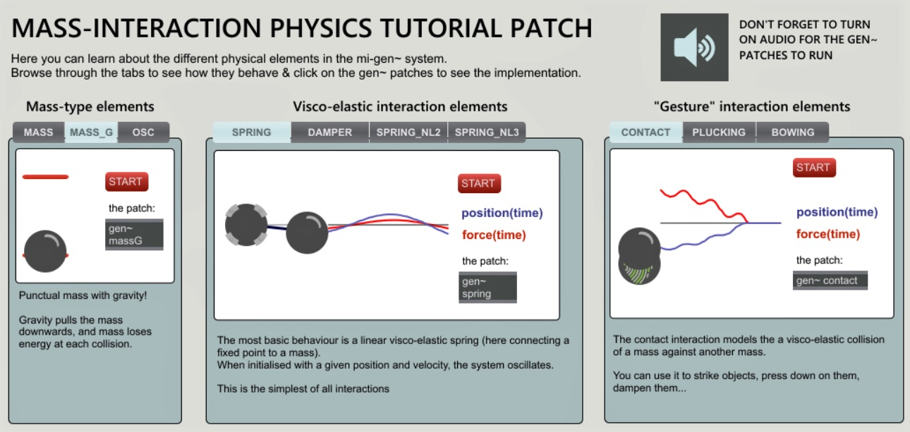

mi-gen~ (Max/MSP)
mi-gen~ is a mass-interaction physical modelling toolbox for the Max/MSP patching environment. It allows coding and simulating virtual physical objects, modelled as networks of one-dimensional masses and interactions (springs, dampers, conditional contacts, non-linear interactions, etc.), directly within gen~'s codebox system.
mi-gen comes with a dedicated tutorial patch, do not miss it if you want to find out a bit more about 1D Mass-Interaction Physical Modeling. Once you've placed the package in Max's package folder and launched Max, head over to the "extras" tab: you should find an mi-gen~ Tutorial Patch. Open the 00 - MI_Tutorial

Quick Tour
Tutorials
Part 1 - Getting Started
Part 1 - Getting Started
Part 2 - Building our first Model
Part 2 - Building our first Model
Part 3 - Controlling Physical Parameters
Part 3 - Controlling Physical Parameters
Part 4 - Visualising Motion
Part 4 - Visualising Motion
Part 5 - Building a Larger Model
Part 5 - Building a Larger Model
Part 6 - Striking, Plucking and Bowing
Part 6 - Striking, Plucking and Bowing